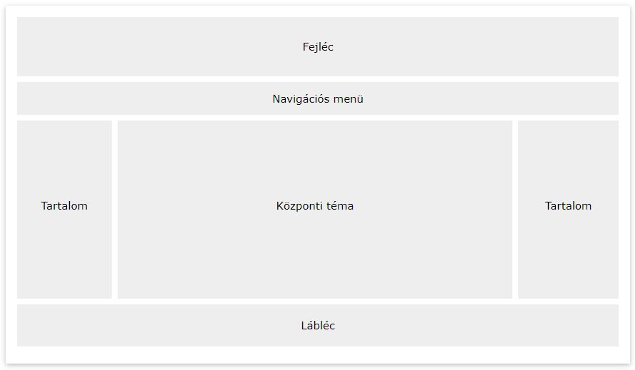

Hogyan készült?
A tervezést a weblap elrendezésével kezdtem, amelynél törekedtem hogy lehetőleg állandó legyen az oldalaimon.
Színválasztásilag a kék világosabb árnyalataira gondoltam. Amikor odajutottam végül az oldalaimon is látható színkonbináció lett a befutó.
Előre tervezésileg eddig jutottam. Innenstől a többi elemet improvizáltam, mind konkrét elhelyezésileg, mind formázásilag.
Tetszett a feladat. Régen szerkesztettem már weblapot, ezért is volt jó feleleveníteni a régi tudást ezen feladat alatt és újjal bővíteni azt.
Nehézséget legtöbbször a pozícionálás jelentet, de miután utánnanéztem a dolgoknak, meg is tudtam oldani őket. Szerencsére a W3SCHOOLS rengeteg hasznosinformációval rendelkezik ezen téren, melyet mindenkinek csak ajánlani tudok.